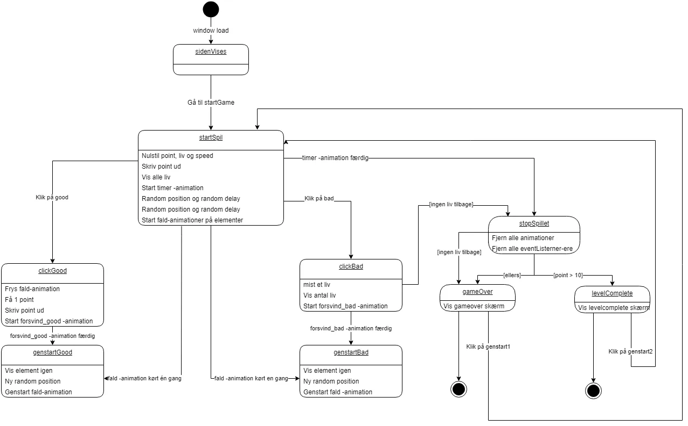

Den fortryllede skov
Drowsy dragons den
"Drowsy Dragonsden" er et spil, hvor en tyv beder om hjælp til at indsamle penge til deres syge mor. I en dragehule skal du samle mønter uden at vække drageungen, der sover. Klik på mønterne og undgå klokkerne for at forblive lydløs.


Stilen er farverig med et babybias karakterdesign. Tyvens mistænkelige side reflekteres i teksten og afspejles i spillets "vinder" eller "taber" slutskærme.

Tekniske Problemer

Jeg kom hurtigt, i mit arbejde med illustrator, frem til at det var meget udfordrende at tegne med former. Det bør her nævnes at jeg først da projektet næsten var ovre opdagede at man med pentool'et kan tilføje anchor-points som gør det nemmere at manipulerer formerne.
Killing my darling
Jeg måtte efterhånden erkende at min originale idé med dragen var for udfordrende at lave i illustrator for en begynder. Så jeg gik igang med en ny idé hvor jeg testede nogle særlige funktioner som distort af til hælp.
AI til undsætning
På trods af mit nyere mere simple koncept var jeg stadig udfordret. Min skov kunne ikke konverteres korrekt nettop grundet de effekter jeg havde anvendt. Heldigvis opdagede jeg at illustrator have en funktion der kunne generer ai-billeder.
.webp)
.webp)


Så jeg gik igang med at lave mange ai-billeder for at finde noget jeg kunne bruge. Herefter justerede jeg på billederne fx ved at tilføje flere træer, fjerne uønskede elementer og justere på farverne. Forneden kan i se flere eksemler på hvad jeg kom frem til med min justeringer.


Slutresultater
Skærme

Ui-elementer
Spil genstande